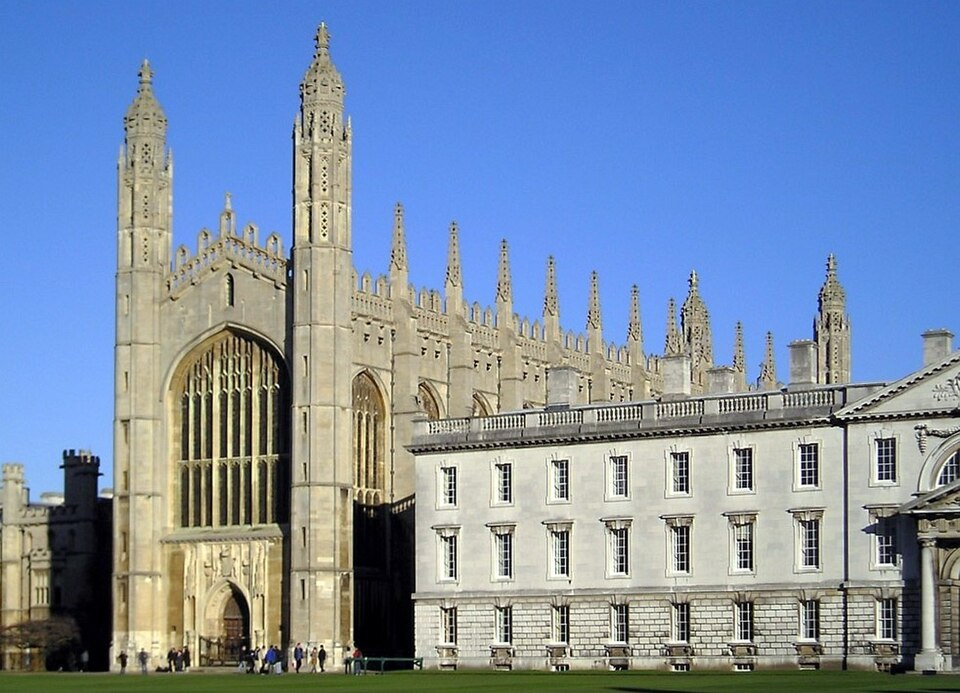

✦ Clásico / imperdibleKing’s College Chapel
La gran bóveda de abanico y las vidrieras hacen de esta capilla una de las imágenes esenciales de Cambridge. Su fachada junto al césped ya merece una pausa.
La visita turística requiere entrada; consulta disponibilidad y acceso en la web del college.
King’s Parade, CB2 1ST
Crédito de la fotografía
Fuente: Wikimedia; atribución completa en preparación. Fuente original ↗